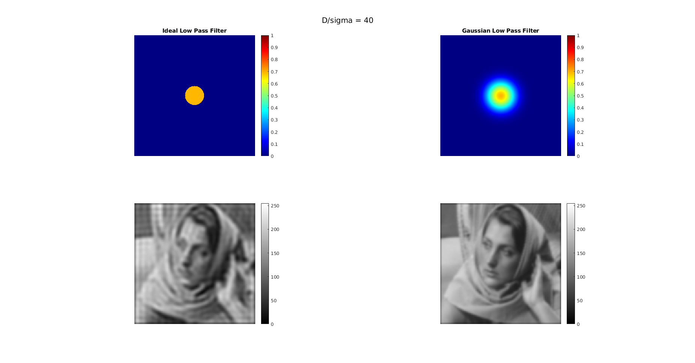
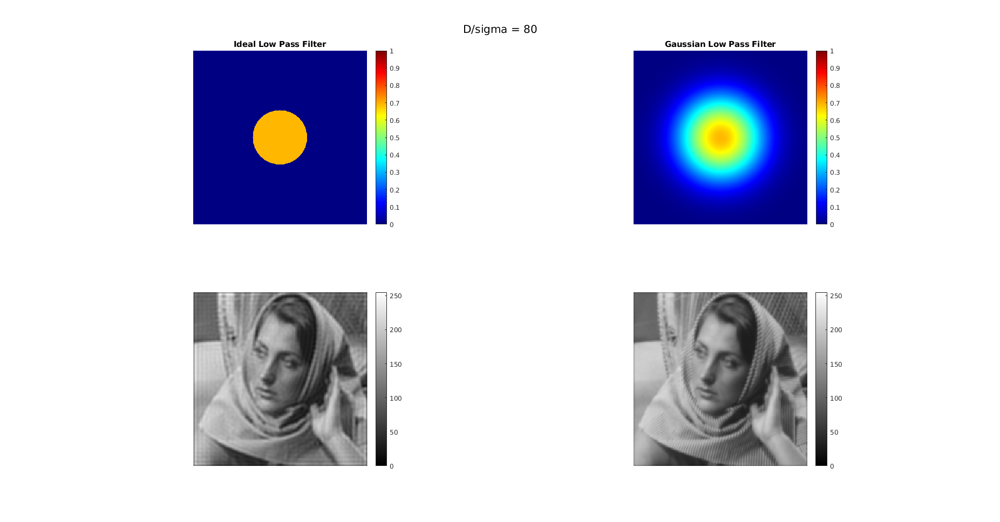

Contents
Reading inputs
img = imread('barbara256.png');
[x ,y] = size(img);
img = padarray(img,[x/2 y/2],0,'both');
[x ,y] = size(img);
fft_img = fftshift(fft2(img));
Output images
D = 40;
sigma = 40;
[lp_img1, abs_img1] = ILPF(fft_img, D);
[glp_img1, absg_img1] = GLPF(fft_img, sigma);
D = 80;
sigma = 80;
[lp_img2, abs_img2] = ILPF(fft_img, D);
[glp_img2, absg_img2] = GLPF(fft_img, sigma);
Observation
Displaying Output
fig1 = figure('Position',[0,0,5000,5000]);
subplot(2,2,1);
imshow(abs_img1);
colormap(jet);
colorbar;
title('Ideal Low Pass Filter');
subplot(2,2,2)
imshow(absg_img1);
colormap(jet)
colorbar;
title('Gaussian Low Pass Filter');
subplot(2,2,3);
imshow(lp_img1);
colorbar;
subplot(2,2,4)
imshow(glp_img1);
colorbar;
sgtitle('D/sigma = 40');
fig2 = figure('Position',[0,0,5000,5000]);
subplot(2,2,1);
imshow(abs_img2);
colormap(jet);
colorbar;
title('Ideal Low Pass Filter');
subplot(2,2,2)
imshow(absg_img2);
colormap(jet)
colorbar;
title('Gaussian Low Pass Filter');
subplot(2,2,3);
imshow(lp_img2);
colorbar;
subplot(2,2,4)
imshow(glp_img2);
colorbar;
sgtitle('D/sigma = 80');
function [lp_img, abs_img] = ILPF(fft_img, D)
[x ,y] = size(fft_img);
ilpf_img = zeros(x,y);
ilpf_filter = zeros(x,y);
for i = 1:x
for j = 1:y
if((i-x/2)^2 + (j-y/2)^2 > D^2)
ilpf_img(i,j) = 0;
ilpf_filter(i,j) = 0;
else
ilpf_img(i,j) = fft_img(i,j);
ilpf_filter(i,j) = 1;
end
end
end
lp_img = uint8(ifft2(ifftshift(ilpf_img)));
abs_img = log(abs(ilpf_filter)+1);
lp_img = lp_img(129:384,129:384);
end
function [glp_img, absg_img] = GLPF(fft_img, sigma)
[x ,y] = size(fft_img);
[u, v] = meshgrid(-x/2:x/2-1,-y/2:y/2-1);
gaussian_filter = exp(-(u.^2+v.^2)/(2*sigma^2));
glpf_img = gaussian_filter.*fft_img;
glp_img = uint8(ifft2(ifftshift(glpf_img)));
absg_img = log(abs(gaussian_filter)+1);
glp_img = glp_img(129:384,129:384);
end
Warning: Displaying real part of complex input.
Warning: Displaying real part of complex input.
 